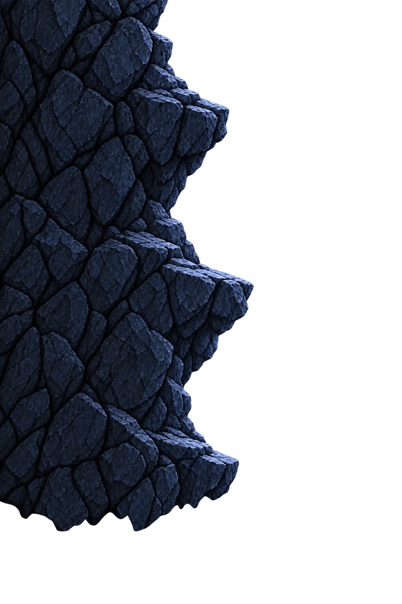
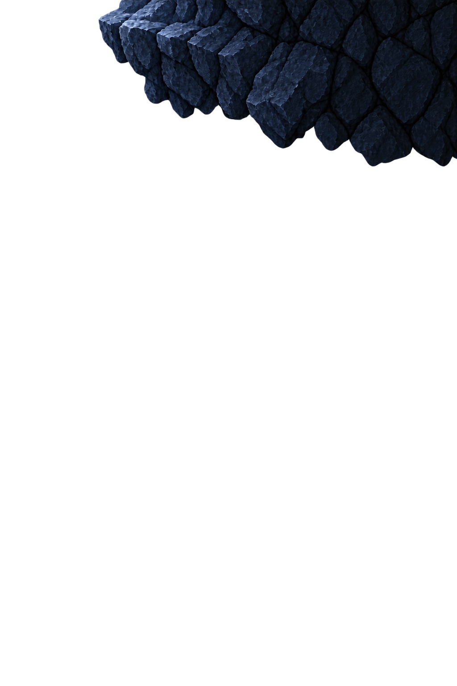
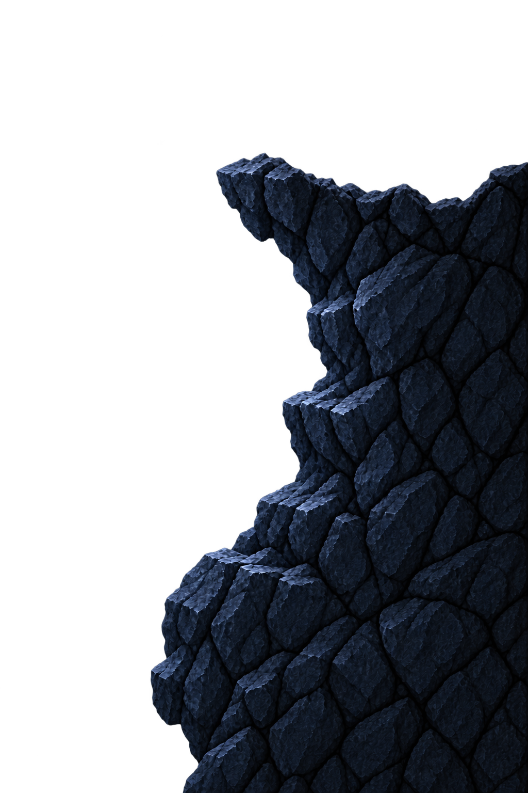
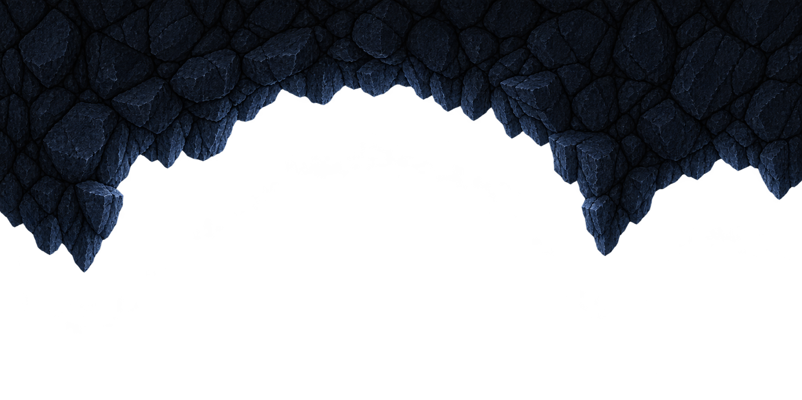
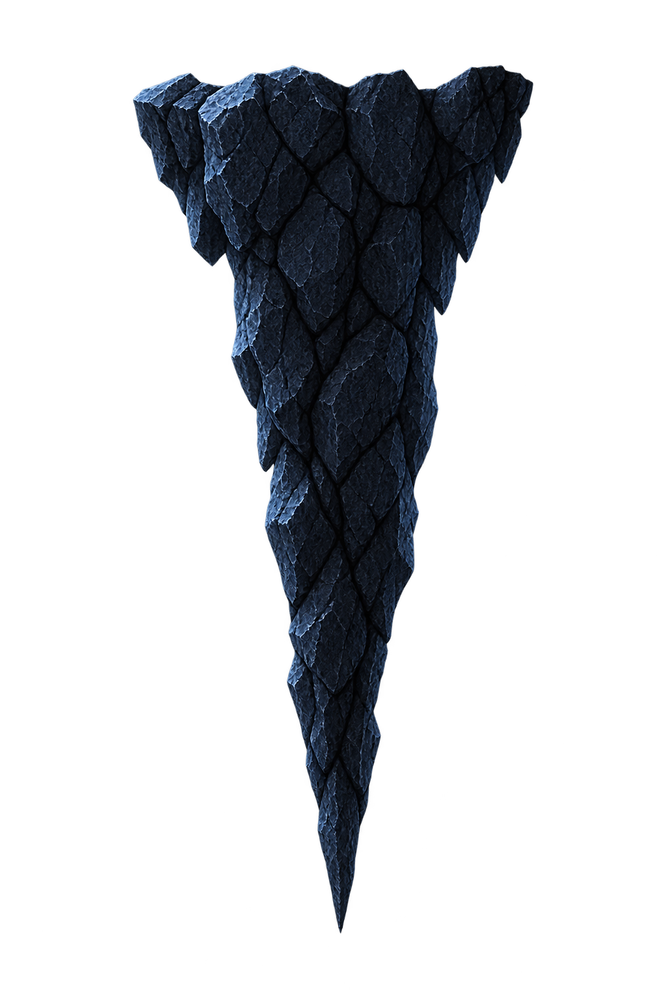

전체 구역








공간 연결용 배치도
점프·충돌 검증 전
하단 진입
하단 진입 → 좌우 등반 → 중간 쉼턱 → 상단 통로. 전 구간 하늘 없음 · 16:9 · 캐릭터 약9%.
입구 위 벽 · 출구 위 벽 · 출구 아래 벽을 별도 PNG로 배치. 벽 clip-path 제거. 발판은 기존 제안 유지. 수정 전
통합 조립표 · 마감 기록 · 시작맵부터 연결 보기





공간 연결용 배치도
점프·충돌 검증 전
너비는 투명 여백을 포함한 PNG 캔버스 기준입니다. 비율을 유지해 확대·축소하므로 두께도 함께 변합니다. 같은 두께에서 길이를 바꾸려면 다른 소재를 선택하세요. 변경은 이 페이지에만 적용되며 새로고침하면 초기화됩니다. JSON으로 저장한 배치도 Unity 좌표나 충돌 데이터가 아닙니다.
상단 출구 발판 위의 종유석은 독립 이미지입니다. 낙하선은 위치 참고이며 실제 낙하·피격 기능은 없습니다. 발판 폭과 간격은 위에서 계속 조절할 수 있습니다. 실제 점프 동선 확정은 Unity 배치 후 진행합니다.
버튼은 구간별 비교 위치를 보여줍니다. 자동 둘러보기는 장면을 순서대로 전환하며 실제 이동·점프를 재현하지 않습니다. 발판 간격과 통로 폭은 플레이 테스트 후 조정합니다.
기존 후면·좌우벽 + 좁음·중간·넓음 발판3종. 각 발판은 독립 소재이며 폭과 간격을 다르게 배치했습니다. 바닥·상단 통로는 기존 긴 소재를 유지하고 천장은 별도 동굴 소재로 교체했습니다. 실내 눈과 불필요한 소품은 추가하지 않았습니다.
시작맵 외부→입구와 상단 보스 통로의 실제 씬 전환은 포함하지 않습니다. 이번 구역 안의 진입·등반·출구를 구성한 아트 프로토타입입니다.
사양·프롬프트·검토 기록 · 배치 데이터